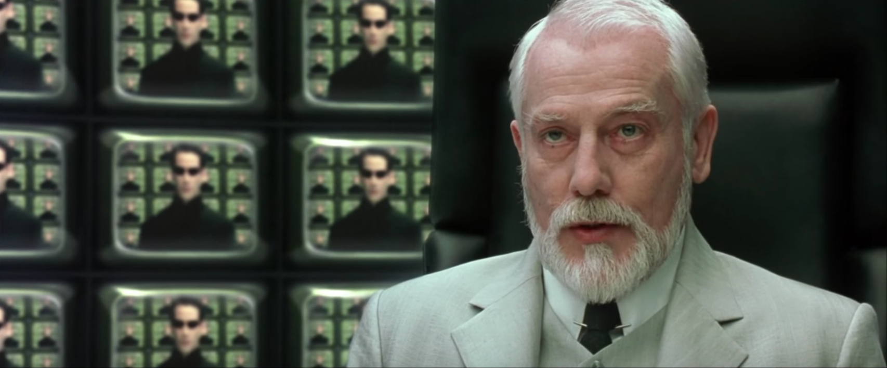

Mobbarkitektur
Hjälp ditt team att upptäcka vad de redan vet.
Martin Carlsson @Ystromm
Byggd med reveal.js
Rita tillsammans

Lär av varandra.
Säg hej till Larry
Arkitekten.
Det fanns en plan
Delsystem och sånt. Och jättebra anledningar till varför.
Det blev lite tyst
Arkitekturinducerad modlöshet.
Vad göra?

Värsta högteknologiska verktygen.
Börja enkelt
En tom låda.
Vad finns i närheten?
Användarkategorier och system i närheten.
Vad hette det sa du?
Om det funkar; Shift+F6.
Vad finns inuti?
Djävulen finns i detaljerna.
Svart backe
Lägg till något konstigt och se om någon märker.
Ett exempel
Alla likheter med riktiga projekt är ett rent sammanträffande.
Berättelser i sin egen saft

Observationer och ändringar sattes upp i arkitekturen.
Grönsakslådan

Och hamnade längst ner när de blev klara.
Fira genom att frysa ett foto
Glöm inte att koldioxidkompensera.
Riktig tokigt

Börja om ibland.
Alla vet massor av saker!
De behöver få berätta sin egen historia.
Tack!
Inga wombater skadades under produktionen av den här presentationen.